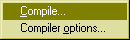

Edit a code library
In this window you can enter C# sourcecode for library functions, that you can refer to in your plotted functions. Here is an example:
namespace Fractals {
public class Mandelbrot {
public static int M = 500;
public static int f(double x, double y) {
double xn = 0, yn = 0, x2 = 0, y2 = 0;
for (int n = 0; n < M; n++) {
yn = 2*xn*yn + y;
xn = x2 - y2 + x;
x2 = xn*xn;
y2 = yn*yn;
if (x2 + y2 > 4) return n;
}
return M;
}
}
}
In your function you would then use the following code:
return Fractals.Mandelbrot.f(x, y);
Menu commands:
File menu
Open...
Opens a source text for editing.
Save as...
Saves the source text under the specified filename.
Close
Closes the library window.
Edit menu
The standard clipboard operations.
Compile menu

Compile...
Compiles the library code and shows a dialogbox with compilation errors.
Compiler options...
Shows a dialogbox where you can edit compiler options.